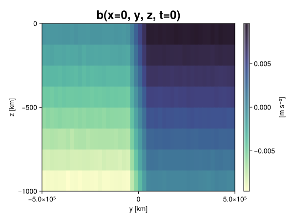
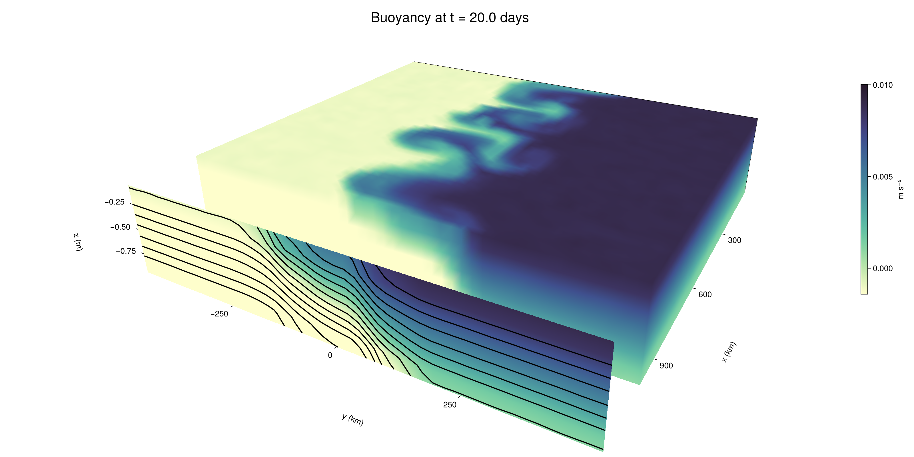

Baroclinic adjustment
In this example, we simulate the evolution and equilibration of a baroclinically unstable front.
Install dependencies
First let's make sure we have all required packages installed.
using Pkg
pkg"add Oceananigans, CairoMakie"using Oceananigans
using Oceananigans.UnitsGrid
We use a three-dimensional channel that is periodic in the x direction:
Lx = 1000kilometers # east-west extent [m]
Ly = 1000kilometers # north-south extent [m]
Lz = 1kilometers # depth [m]
grid = RectilinearGrid(size = (48, 48, 8),
x = (0, Lx),
y = (-Ly/2, Ly/2),
z = (-Lz, 0),
topology = (Periodic, Bounded, Bounded))48×48×8 RectilinearGrid{Float64, Periodic, Bounded, Bounded} on CPU with 3×3×3 halo
├── Periodic x ∈ [0.0, 1.0e6) regularly spaced with Δx=20833.3
├── Bounded y ∈ [-500000.0, 500000.0] regularly spaced with Δy=20833.3
└── Bounded z ∈ [-1000.0, 0.0] regularly spaced with Δz=125.0Model
We built a HydrostaticFreeSurfaceModel with an ImplicitFreeSurface solver. Regarding Coriolis, we use a beta-plane centered at 45° South.
model = HydrostaticFreeSurfaceModel(; grid,
coriolis = BetaPlane(latitude = -45),
buoyancy = BuoyancyTracer(),
tracers = :b,
momentum_advection = WENO(),
tracer_advection = WENO())HydrostaticFreeSurfaceModel{CPU, RectilinearGrid}(time = 0 seconds, iteration = 0)
├── grid: 48×48×8 RectilinearGrid{Float64, Periodic, Bounded, Bounded} on CPU with 3×3×3 halo
├── timestepper: QuasiAdamsBashforth2TimeStepper
├── tracers: b
├── closure: Nothing
├── buoyancy: BuoyancyTracer with ĝ = NegativeZDirection()
├── free surface: ImplicitFreeSurface with gravitational acceleration 9.80665 m s⁻²
│ └── solver: FFTImplicitFreeSurfaceSolver
├── advection scheme:
│ ├── momentum: WENO reconstruction order 5
│ └── b: WENO reconstruction order 5
└── coriolis: BetaPlane{Float64}We start our simulation from rest with a baroclinically unstable buoyancy distribution. We use ramp(y, Δy), defined below, to specify a front with width Δy and horizontal buoyancy gradient M². We impose the front on top of a vertical buoyancy gradient N² and a bit of noise.
"""
ramp(y, Δy)
Linear ramp from 0 to 1 between -Δy/2 and +Δy/2.
For example:
```
y < -Δy/2 => ramp = 0
-Δy/2 < y < -Δy/2 => ramp = y / Δy
y > Δy/2 => ramp = 1
```
"""
ramp(y, Δy) = min(max(0, y/Δy + 1/2), 1)
N² = 1e-5 # [s⁻²] buoyancy frequency / stratification
M² = 1e-7 # [s⁻²] horizontal buoyancy gradient
Δy = 100kilometers # width of the region of the front
Δb = Δy * M² # buoyancy jump associated with the front
ϵb = 1e-2 * Δb # noise amplitude
bᵢ(x, y, z) = N² * z + Δb * ramp(y, Δy) + ϵb * randn()
set!(model, b=bᵢ)Let's visualize the initial buoyancy distribution.
using CairoMakie
# Build coordinates with units of kilometers
x, y, z = 1e-3 .* nodes(grid, (Center(), Center(), Center()))
b = model.tracers.b
fig, ax, hm = heatmap(view(b, 1, :, :),
colormap = :deep,
axis = (xlabel = "y [km]",
ylabel = "z [km]",
title = "b(x=0, y, z, t=0)",
titlesize = 24))
Colorbar(fig[1, 2], hm, label = "[m s⁻²]")
fig
Simulation
Now let's build a Simulation.
simulation = Simulation(model, Δt=20minutes, stop_time=20days)Simulation of HydrostaticFreeSurfaceModel{CPU, RectilinearGrid}(time = 0 seconds, iteration = 0)
├── Next time step: 20 minutes
├── Elapsed wall time: 0 seconds
├── Wall time per iteration: NaN days
├── Stop time: 20 days
├── Stop iteration : Inf
├── Wall time limit: Inf
├── Callbacks: OrderedDict with 4 entries:
│ ├── stop_time_exceeded => Callback of stop_time_exceeded on IterationInterval(1)
│ ├── stop_iteration_exceeded => Callback of stop_iteration_exceeded on IterationInterval(1)
│ ├── wall_time_limit_exceeded => Callback of wall_time_limit_exceeded on IterationInterval(1)
│ └── nan_checker => Callback of NaNChecker for u on IterationInterval(100)
├── Output writers: OrderedDict with no entries
└── Diagnostics: OrderedDict with no entriesWe add a TimeStepWizard callback to adapt the simulation's time-step,
conjure_time_step_wizard!(simulation, IterationInterval(20), cfl=0.2, max_Δt=20minutes)Also, we add a callback to print a message about how the simulation is going,
using Printf
wall_clock = Ref(time_ns())
function print_progress(sim)
u, v, w = model.velocities
progress = 100 * (time(sim) / sim.stop_time)
elapsed = (time_ns() - wall_clock[]) / 1e9
@printf("[%05.2f%%] i: %d, t: %s, wall time: %s, max(u): (%6.3e, %6.3e, %6.3e) m/s, next Δt: %s\n",
progress, iteration(sim), prettytime(sim), prettytime(elapsed),
maximum(abs, u), maximum(abs, v), maximum(abs, w), prettytime(sim.Δt))
wall_clock[] = time_ns()
return nothing
end
add_callback!(simulation, print_progress, IterationInterval(100))Diagnostics/Output
Here, we save the buoyancy, $b$, at the edges of our domain as well as the zonal ($x$) average of buoyancy.
u, v, w = model.velocities
ζ = ∂x(v) - ∂y(u)
B = Average(b, dims=1)
U = Average(u, dims=1)
V = Average(v, dims=1)
filename = "baroclinic_adjustment"
save_fields_interval = 0.5day
slicers = (east = (grid.Nx, :, :),
north = (:, grid.Ny, :),
bottom = (:, :, 1),
top = (:, :, grid.Nz))
for side in keys(slicers)
indices = slicers[side]
simulation.output_writers[side] = JLD2OutputWriter(model, (; b, ζ);
filename = filename * "_$(side)_slice",
schedule = TimeInterval(save_fields_interval),
overwrite_existing = true,
indices)
end
simulation.output_writers[:zonal] = JLD2OutputWriter(model, (; b=B, u=U, v=V);
filename = filename * "_zonal_average",
schedule = TimeInterval(save_fields_interval),
overwrite_existing = true)JLD2OutputWriter scheduled on TimeInterval(12 hours):
├── filepath: ./baroclinic_adjustment_zonal_average.jld2
├── 3 outputs: (b, u, v)
├── array type: Array{Float64}
├── including: [:grid, :coriolis, :buoyancy, :closure]
├── file_splitting: NoFileSplitting
└── file size: 30.2 KiBNow we're ready to run.
@info "Running the simulation..."
run!(simulation)
@info "Simulation completed in " * prettytime(simulation.run_wall_time)[ Info: Running the simulation...
[ Info: Initializing simulation...
[00.00%] i: 0, t: 0 seconds, wall time: 13.360 seconds, max(u): (0.000e+00, 0.000e+00, 0.000e+00) m/s, next Δt: 20 minutes
[ Info: ... simulation initialization complete (13.213 seconds)
[ Info: Executing initial time step...
[ Info: ... initial time step complete (20.790 seconds).
[06.94%] i: 100, t: 1.389 days, wall time: 34.750 seconds, max(u): (1.260e-01, 1.179e-01, 1.451e-03) m/s, next Δt: 20 minutes
[13.89%] i: 200, t: 2.778 days, wall time: 2.222 seconds, max(u): (2.158e-01, 1.949e-01, 1.709e-03) m/s, next Δt: 20 minutes
[20.83%] i: 300, t: 4.167 days, wall time: 2.221 seconds, max(u): (2.998e-01, 2.488e-01, 1.715e-03) m/s, next Δt: 20 minutes
[27.78%] i: 400, t: 5.556 days, wall time: 2.230 seconds, max(u): (3.976e-01, 3.331e-01, 1.769e-03) m/s, next Δt: 20 minutes
[34.72%] i: 500, t: 6.944 days, wall time: 2.149 seconds, max(u): (4.479e-01, 4.686e-01, 2.014e-03) m/s, next Δt: 20 minutes
[41.67%] i: 600, t: 8.333 days, wall time: 2.215 seconds, max(u): (5.842e-01, 6.566e-01, 2.353e-03) m/s, next Δt: 20 minutes
[48.61%] i: 700, t: 9.722 days, wall time: 2.205 seconds, max(u): (8.273e-01, 9.943e-01, 3.050e-03) m/s, next Δt: 20 minutes
[55.56%] i: 800, t: 11.111 days, wall time: 2.469 seconds, max(u): (1.220e+00, 1.134e+00, 5.056e-03) m/s, next Δt: 20 minutes
[62.50%] i: 900, t: 12.500 days, wall time: 2.212 seconds, max(u): (1.377e+00, 1.035e+00, 5.106e-03) m/s, next Δt: 20 minutes
[69.44%] i: 1000, t: 13.889 days, wall time: 2.236 seconds, max(u): (1.327e+00, 9.855e-01, 4.480e-03) m/s, next Δt: 20 minutes
[76.39%] i: 1100, t: 15.278 days, wall time: 2.227 seconds, max(u): (1.301e+00, 1.003e+00, 2.836e-03) m/s, next Δt: 20 minutes
[83.33%] i: 1200, t: 16.667 days, wall time: 2.249 seconds, max(u): (1.338e+00, 9.532e-01, 2.757e-03) m/s, next Δt: 20 minutes
[90.28%] i: 1300, t: 18.056 days, wall time: 2.270 seconds, max(u): (1.207e+00, 1.132e+00, 3.116e-03) m/s, next Δt: 20 minutes
[97.22%] i: 1400, t: 19.444 days, wall time: 2.272 seconds, max(u): (1.496e+00, 1.338e+00, 3.089e-03) m/s, next Δt: 20 minutes
[ Info: Simulation is stopping after running for 1.150 minutes.
[ Info: Simulation time 20 days equals or exceeds stop time 20 days.
[ Info: Simulation completed in 1.151 minutes
Visualization
All that's left is to make a pretty movie. Actually, we make two visualizations here. First, we illustrate how to make a 3D visualization with Makie's Axis3 and Makie.surface. Then we make a movie in 2D. We use CairoMakie in this example, but note that using GLMakie is more convenient on a system with OpenGL, as figures will be displayed on the screen.
using CairoMakieThree-dimensional visualization
We load the saved buoyancy output on the top, north, and east surface as FieldTimeSerieses.
filename = "baroclinic_adjustment"
sides = keys(slicers)
slice_filenames = NamedTuple(side => filename * "_$(side)_slice.jld2" for side in sides)
b_timeserieses = (east = FieldTimeSeries(slice_filenames.east, "b"),
north = FieldTimeSeries(slice_filenames.north, "b"),
top = FieldTimeSeries(slice_filenames.top, "b"))
B_timeseries = FieldTimeSeries(filename * "_zonal_average.jld2", "b")
times = B_timeseries.times
grid = B_timeseries.grid48×48×8 RectilinearGrid{Float64, Periodic, Bounded, Bounded} on CPU with 3×3×3 halo
├── Periodic x ∈ [0.0, 1.0e6) regularly spaced with Δx=20833.3
├── Bounded y ∈ [-500000.0, 500000.0] regularly spaced with Δy=20833.3
└── Bounded z ∈ [-1000.0, 0.0] regularly spaced with Δz=125.0We build the coordinates. We rescale horizontal coordinates to kilometers.
xb, yb, zb = nodes(b_timeserieses.east)
xb = xb ./ 1e3 # convert m -> km
yb = yb ./ 1e3 # convert m -> km
Nx, Ny, Nz = size(grid)
x_xz = repeat(x, 1, Nz)
y_xz_north = y[end] * ones(Nx, Nz)
z_xz = repeat(reshape(z, 1, Nz), Nx, 1)
x_yz_east = x[end] * ones(Ny, Nz)
y_yz = repeat(y, 1, Nz)
z_yz = repeat(reshape(z, 1, Nz), grid.Ny, 1)
x_xy = x
y_xy = y
z_xy_top = z[end] * ones(grid.Nx, grid.Ny)Then we create a 3D axis. We use zonal_slice_displacement to control where the plot of the instantaneous zonal average flow is located.
fig = Figure(size = (1600, 800))
zonal_slice_displacement = 1.2
ax = Axis3(fig[2, 1],
aspect=(1, 1, 1/5),
xlabel = "x (km)",
ylabel = "y (km)",
zlabel = "z (m)",
xlabeloffset = 100,
ylabeloffset = 100,
zlabeloffset = 100,
limits = ((x[1], zonal_slice_displacement * x[end]), (y[1], y[end]), (z[1], z[end])),
elevation = 0.45,
azimuth = 6.8,
xspinesvisible = false,
zgridvisible = false,
protrusions = 40,
perspectiveness = 0.7)Axis3()We use data from the final savepoint for the 3D plot. Note that this plot can easily be animated by using Makie's Observable. To dive into Observables, check out Makie.jl's Documentation.
n = length(times)41Now let's make a 3D plot of the buoyancy and in front of it we'll use the zonally-averaged output to plot the instantaneous zonal-average of the buoyancy.
b_slices = (east = interior(b_timeserieses.east[n], 1, :, :),
north = interior(b_timeserieses.north[n], :, 1, :),
top = interior(b_timeserieses.top[n], :, :, 1))
# Zonally-averaged buoyancy
B = interior(B_timeseries[n], 1, :, :)
clims = 1.1 .* extrema(b_timeserieses.top[n][:])
kwargs = (colorrange=clims, colormap=:deep, shading=NoShading)
surface!(ax, x_yz_east, y_yz, z_yz; color = b_slices.east, kwargs...)
surface!(ax, x_xz, y_xz_north, z_xz; color = b_slices.north, kwargs...)
surface!(ax, x_xy, y_xy, z_xy_top; color = b_slices.top, kwargs...)
sf = surface!(ax, zonal_slice_displacement .* x_yz_east, y_yz, z_yz; color = B, kwargs...)
contour!(ax, y, z, B; transformation = (:yz, zonal_slice_displacement * x[end]),
levels = 15, linewidth = 2, color = :black)
Colorbar(fig[2, 2], sf, label = "m s⁻²", height = Relative(0.4), tellheight=false)
title = "Buoyancy at t = " * string(round(times[n] / day, digits=1)) * " days"
fig[1, 1:2] = Label(fig, title; fontsize = 24, tellwidth = false, padding = (0, 0, -120, 0))
rowgap!(fig.layout, 1, Relative(-0.2))
colgap!(fig.layout, 1, Relative(-0.1))
save("baroclinic_adjustment_3d.png", fig)
Two-dimensional movie
We make a 2D movie that shows buoyancy $b$ and vertical vorticity $ζ$ at the surface, as well as the zonally-averaged zonal and meridional velocities $U$ and $V$ in the $(y, z)$ plane. First we load the FieldTimeSeries and extract the additional coordinates we'll need for plotting
ζ_timeseries = FieldTimeSeries(slice_filenames.top, "ζ")
U_timeseries = FieldTimeSeries(filename * "_zonal_average.jld2", "u")
B_timeseries = FieldTimeSeries(filename * "_zonal_average.jld2", "b")
V_timeseries = FieldTimeSeries(filename * "_zonal_average.jld2", "v")
xζ, yζ, zζ = nodes(ζ_timeseries)
yv = ynodes(V_timeseries)
xζ = xζ ./ 1e3 # convert m -> km
yζ = yζ ./ 1e3 # convert m -> km
yv = yv ./ 1e3 # convert m -> km49-element Vector{Float64}:
-500.0
-479.1666666666667
-458.3333333333333
-437.5
-416.6666666666667
-395.8333333333333
-375.0
-354.1666666666667
-333.3333333333333
-312.5
-291.6666666666667
-270.8333333333333
-250.0
-229.16666666666666
-208.33333333333334
-187.5
-166.66666666666666
-145.83333333333334
-125.0
-104.16666666666667
-83.33333333333333
-62.5
-41.666666666666664
-20.833333333333332
0.0
20.833333333333332
41.666666666666664
62.5
83.33333333333333
104.16666666666667
125.0
145.83333333333334
166.66666666666666
187.5
208.33333333333334
229.16666666666666
250.0
270.8333333333333
291.6666666666667
312.5
333.3333333333333
354.1666666666667
375.0
395.8333333333333
416.6666666666667
437.5
458.3333333333333
479.1666666666667
500.0Next, we set up a plot with 4 panels. The top panels are large and square, while the bottom panels get a reduced aspect ratio through rowsize!.
set_theme!(Theme(fontsize=24))
fig = Figure(size=(1800, 1000))
axb = Axis(fig[1, 2], xlabel="x (km)", ylabel="y (km)", aspect=1)
axζ = Axis(fig[1, 3], xlabel="x (km)", ylabel="y (km)", aspect=1, yaxisposition=:right)
axu = Axis(fig[2, 2], xlabel="y (km)", ylabel="z (m)")
axv = Axis(fig[2, 3], xlabel="y (km)", ylabel="z (m)", yaxisposition=:right)
rowsize!(fig.layout, 2, Relative(0.3))To prepare a plot for animation, we index the timeseries with an Observable,
n = Observable(1)
b_top = @lift interior(b_timeserieses.top[$n], :, :, 1)
ζ_top = @lift interior(ζ_timeseries[$n], :, :, 1)
U = @lift interior(U_timeseries[$n], 1, :, :)
V = @lift interior(V_timeseries[$n], 1, :, :)
B = @lift interior(B_timeseries[$n], 1, :, :)Observable([-0.009376544587305968 -0.00810153477241571 -0.006852949012382321 -0.005656329866051837 -0.004397131445709873 -0.003123920884721938 -0.0018648236396648036 -0.0006332047191660705; -0.009378912791263532 -0.00810550453271752 -0.006888040555409721 -0.005625774291124405 -0.0043871568127414875 -0.0031268866675769704 -0.0018638356815042138 -0.0006170280103762086; -0.009379771451809153 -0.008119082534811351 -0.006873806075440289 -0.005615610994487682 -0.0044019765496178895 -0.0031475493104640043 -0.0018793296371417722 -0.0006593378816432573; -0.00936897135037963 -0.00811651223829306 -0.006881757307610328 -0.005632002236296102 -0.004392945361141637 -0.0031043682539404205 -0.001891588715602329 -0.0006514037974515908; -0.009366115683403283 -0.00812625295018064 -0.006905774892453404 -0.005613313235681865 -0.004361333096857979 -0.003117337180728223 -0.001853803142400024 -0.0006169418844201117; -0.009358068798912055 -0.008106504232466706 -0.006869769991851586 -0.005637959389248621 -0.004388823605496659 -0.0031401592316141307 -0.0018753443743943418 -0.0006285790366763832; -0.009373774529367116 -0.008091447645794952 -0.00689839502837056 -0.005635802764166929 -0.004366634896060019 -0.0031259468580300148 -0.0018670130765359998 -0.0006090032908104709; -0.009396252136454668 -0.008103939055083558 -0.006913599758062998 -0.005592067800629809 -0.0043832702513460125 -0.0031192031840465775 -0.0018799148171526764 -0.0006152694909230314; -0.009392867710334539 -0.00812252983646008 -0.0068626161815599955 -0.005619417250515479 -0.0043734093570706204 -0.0031053574511208533 -0.0018767791511464505 -0.0006027408526981477; -0.00938644720906857 -0.008127829004030059 -0.0068625291437789575 -0.005622310562106593 -0.004383358825778131 -0.0031307821114893476 -0.0018476085843646113 -0.0006402637082372916; -0.009396558131646533 -0.00814275749373 -0.006862180801304698 -0.005641023448234928 -0.004387739836267147 -0.0031220690140986774 -0.0018746471319177494 -0.0005797933147360754; -0.009357913734693711 -0.008133549810349064 -0.006861238455879666 -0.005629405138287818 -0.004386523570462577 -0.003128756096109919 -0.0018802934664227395 -0.0006208622456353204; -0.009362899218397475 -0.00811881229276082 -0.006868674347405072 -0.005636313038932022 -0.004396729880941878 -0.0031309602098939563 -0.0018750637924887044 -0.0006213769762776974; -0.009383991164111994 -0.008137312042818397 -0.00686933092422595 -0.005626380781960237 -0.004378226472556185 -0.0031136565871838356 -0.0018802705248298548 -0.0006214440019880634; -0.009380002726897884 -0.008133580944964922 -0.006879035474405473 -0.005606617311467295 -0.004364740742224885 -0.003133391918004208 -0.0018804694153033389 -0.000621323074026181; -0.009370134089574987 -0.00812811550687886 -0.006867609249994574 -0.005609675940593626 -0.004380454905205719 -0.0031278253400485404 -0.001889174188353547 -0.0006559303369409755; -0.00936402237043426 -0.008133059061960534 -0.006846634516688133 -0.0056064519379769 -0.0043631120166490915 -0.0031358974391441853 -0.0018897185198183414 -0.0006132577401862892; -0.009368216761023352 -0.008111843972458012 -0.006880842484020651 -0.005613185055984084 -0.004349010954646066 -0.003118221292149398 -0.0018626586283966894 -0.0006395166916713827; -0.009389835175037168 -0.008150450211632002 -0.006872555697503321 -0.005646466673904403 -0.004373273882150457 -0.003118718895240678 -0.0018908187075603253 -0.000618674887350898; -0.009357713419781264 -0.008129646277457608 -0.0068700690621937704 -0.005632422802206077 -0.004372408200983277 -0.0031241617277175623 -0.0018768863764966703 -0.0005960891086477894; -0.009378834728133844 -0.008115233626435759 -0.0068691608085224955 -0.0056184412893519236 -0.004371685909589567 -0.003121268559656135 -0.0018672141227873487 -0.0006292540094252713; -0.009394552956809217 -0.008114323188148325 -0.006884912373797428 -0.005616995466984603 -0.004361432465616201 -0.0031324219505318475 -0.0018638500800050104 -0.0006232029592302809; -0.007518827513564499 -0.006268793525125684 -0.004996194132840904 -0.0037588857193148403 -0.0025086829311652048 -0.0012577225621094625 -3.5218785413348434e-5 0.0012398012077995278; -0.00541472708348979 -0.0041605406368030095 -0.0029438320711562 -0.0016299752152332803 -0.0004195158110372832 0.0008546835988173778 0.002085167295665148 0.003304080051728877; -0.003348565771496541 -0.002086370846823031 -0.0008530005564295994 0.000425659985782933 0.0016680536345854938 0.002901595488067284 0.004195092309478635 0.005405163074004651; -0.0012551632563344637 -2.0502828539891146e-5 0.0012488357969893075 0.0025060471028864654 0.0037527568199577934 0.005018723894980325 0.006267329289644054 0.007470188229090325; 0.0006256371138234031 0.001862202240298117 0.0031291232211614964 0.004362547248896322 0.00561481786366222 0.006860714640896565 0.008146742116077254 0.009357410619843977; 0.0006343347938997509 0.0018672437375856167 0.003103619128931341 0.004366267729662066 0.005624082864054369 0.006881538669248277 0.008117842896906067 0.009392466333864412; 0.0006069357622870958 0.0018743378367049954 0.003139359295974193 0.004405455855325262 0.005615750703350031 0.0068538196395210435 0.008096569178130604 0.00938374286403125; 0.0006158347415258462 0.0018653579956353352 0.00312458258322041 0.004360710218278037 0.005599189044340262 0.006869061289270707 0.008145872352997264 0.009366750380314417; 0.0006150229056366079 0.0018547858822339162 0.003132250692328173 0.004362223918205945 0.005612956694032091 0.0068619143069456705 0.008120239559134582 0.009352942640438627; 0.0006279071629601668 0.0018837326231457754 0.003135432763548216 0.004367929499393339 0.005616338305081688 0.006886987003511306 0.008113558108164469 0.009389705821836675; 0.0006165442345252799 0.0018662083482762191 0.003132203683993332 0.0043819619703476375 0.005620149554947232 0.00685809873685617 0.008131295872362604 0.009377691285920716; 0.0006177803452924293 0.0018622824152733416 0.0031144933123779845 0.00438676334897974 0.005610199543603448 0.006853934298994761 0.008098323000594359 0.00938658109465458; 0.0006560149557106877 0.001877454774683125 0.0031295487604478932 0.004370755697896421 0.005624041190954173 0.006862204855104551 0.008120729836500364 0.00935757218179692; 0.0005956245216454468 0.0018724710711388167 0.003131675192782846 0.004381798571581371 0.005628947249420191 0.006846222367054508 0.008119039173979783 0.009380489179981017; 0.0006330054852588715 0.0018991566681447938 0.003138664849659478 0.004369460487900319 0.005603329937429507 0.006856164655756311 0.008084486529326253 0.009390600720477232; 0.0006425262073165821 0.0018831883605264184 0.0031364020236450325 0.004408934816611975 0.005613868178491855 0.006876061957193838 0.008137587489261007 0.00939954149579751; 0.0006395729811794978 0.0018571784933639698 0.0031097058422325102 0.004368835767411175 0.0056337118773750125 0.0068815809030123255 0.008124431183826797 0.009351247164620208; 0.0006435501564524205 0.0018848559380628543 0.0031287045104997275 0.004385230247778097 0.005628354050857051 0.006861434193921286 0.008120230835729323 0.009370721468500336; 0.0006041160191160521 0.0018799027375854631 0.00310558144056266 0.004352668182769477 0.005617814458995407 0.006880333542410337 0.008109570956881022 0.009373112588731006; 0.0006184290945458346 0.0018785609128229759 0.003138205066751909 0.004368023035153977 0.005598682591840337 0.006901915084591166 0.008126858745482935 0.009338087817935775; 0.0006180227983558698 0.0018686639482289212 0.0031056031753089533 0.004377693776108243 0.005631065943395002 0.006869258911012854 0.00811301533080259 0.009396500793836747; 0.0006364095809390332 0.0018872679924282678 0.0031224162591713665 0.004347930232789966 0.005604629973035874 0.006870472206866002 0.008124074964502924 0.009366403465607902; 0.0006363424442379522 0.0019062625735841645 0.0031200302859738746 0.004350587002832223 0.005627817485965784 0.006881911001586399 0.008112225986516688 0.009376059115866633; 0.0006404552303255176 0.001879636196968568 0.003122543935031697 0.004391742447443672 0.0056193719818581865 0.006845938472599987 0.008138072462718351 0.009381704548284922; 0.0006260518995726884 0.0018705525657913445 0.0031360067852601293 0.004376760528664631 0.005627009263966931 0.006892634833353194 0.008128461935592978 0.009361851814972042; 0.0006382696694568349 0.0018720943417132718 0.0031465253106648054 0.004338823726649043 0.005630623856741259 0.006881808962065483 0.008112628965507658 0.009373189772177803])
and then build our plot:
hm = heatmap!(axb, xb, yb, b_top, colorrange=(0, Δb), colormap=:thermal)
Colorbar(fig[1, 1], hm, flipaxis=false, label="Surface b(x, y) (m s⁻²)")
hm = heatmap!(axζ, xζ, yζ, ζ_top, colorrange=(-5e-5, 5e-5), colormap=:balance)
Colorbar(fig[1, 4], hm, label="Surface ζ(x, y) (s⁻¹)")
hm = heatmap!(axu, yb, zb, U; colorrange=(-5e-1, 5e-1), colormap=:balance)
Colorbar(fig[2, 1], hm, flipaxis=false, label="Zonally-averaged U(y, z) (m s⁻¹)")
contour!(axu, yb, zb, B; levels=15, color=:black)
hm = heatmap!(axv, yv, zb, V; colorrange=(-1e-1, 1e-1), colormap=:balance)
Colorbar(fig[2, 4], hm, label="Zonally-averaged V(y, z) (m s⁻¹)")
contour!(axv, yb, zb, B; levels=15, color=:black)Finally, we're ready to record the movie.
frames = 1:length(times)
record(fig, filename * ".mp4", frames, framerate=8) do i
n[] = i
endThis page was generated using Literate.jl.